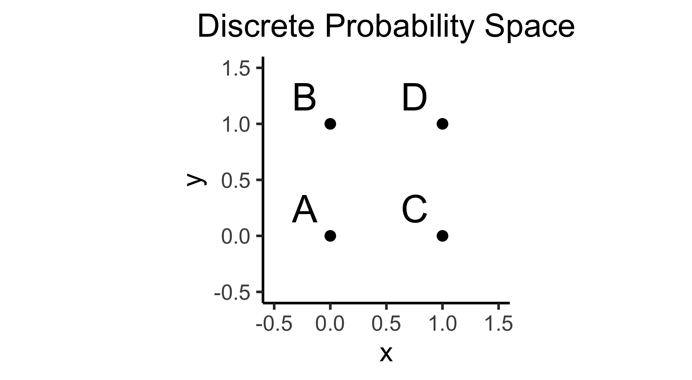

Week 5B: Joint, Marginal, and Conditional Distributions
DSAN 5100: Probabilistic Modeling and Statistical Computing
Section 01
Purna Gamage, Amineh Zadbood, and Jeff Jacobs
Tuesday, September 23, 2025
Frequency Tables \(\leftrightarrow\) Probabilities
\[ \DeclareMathOperator*{\argmax}{argmax} \DeclareMathOperator*{\argmin}{argmin} \newcommand{\bigexp}[1]{\exp\mkern-4mu\left[ #1 \right]} \newcommand{\bigexpect}[1]{\mathbb{E}\mkern-4mu \left[ #1 \right]} \newcommand{\convergesAS}{\overset{\text{a.s.}}{\longrightarrow}} \newcommand{\definedas}{\overset{\text{def}}{=}} \newcommand{\definedalign}{\overset{\phantom{\text{def}}}{=}} \newcommand{\eqeventual}{\overset{\mathclap{\text{\small{eventually}}}}{=}} \newcommand{\Err}{\text{Err}} \newcommand{\expect}[1]{\mathbb{E}[#1]} \newcommand{\expectsq}[1]{\mathbb{E}^2[#1]} \newcommand{\fw}[1]{\texttt{#1}} \newcommand{\given}{\mid} \newcommand{\green}[1]{\color{green}{#1}} \newcommand{\heads}{\outcome{heads}} \newcommand{\iid}{\overset{\text{\small{iid}}}{\sim}} \newcommand{\lik}{\mathcal{L}} \newcommand{\loglik}{\ell} \newcommand{\mle}{\textsf{ML}} \newcommand{\nimplies}{\;\not\!\!\!\!\implies} \newcommand{\orange}[1]{\color{orange}{#1}} \newcommand{\outcome}[1]{\textsf{#1}} \newcommand{\param}[1]{{\color{purple} #1}} \newcommand{\pgsamplespace}{\{\green{1},\green{2},\green{3},\purp{4},\purp{5},\purp{6}\}} \newcommand{\prob}[1]{P\left( #1 \right)} \newcommand{\purp}[1]{\color{purple}{#1}} \newcommand{\sign}{\text{Sign}} \newcommand{\spacecap}{\; \cap \;} \newcommand{\spacewedge}{\; \wedge \;} \newcommand{\tails}{\outcome{tails}} \newcommand{\Var}[1]{\text{Var}[#1]} \newcommand{\bigVar}[1]{\text{Var}\mkern-4mu \left[ #1 \right]} \]
Frequency Tables
- What does Table 1 tell us on its own (before computing proportions in our heads) that is useful for probability?
- Answer: Not much!
- But, once we find the overall total, it tells us a lot (everything we need to know!)
| \(H = 0\) | \(H = 1\) | |
|---|---|---|
| \(G = 10\) | 10 | 5 |
| \(G = 11\) | 6 | 4 |
| \(G = 12\) | 7 | 1 |
(\(G\) = grade, \(H\) = honors status)
Tells us, e.g., 5 honors students in grade 10
Why Do We Need The Total?
- Q1: Someone asks the probability that a randomly-selected student will be an honor student in 11th grade.
- Q2: Someone asks what proportion of students are honors
- Q3: Someone asks what % of 12th grade are honors
Q1, for example, is asking us for \(\Pr(G = 11, H = 1)\), a question we can answer if we know the joint distribution \(f_{G,H}(g, h)\)
Back to the Naïve Definition
Using our naïve definition of probability, we can compute this probability using the frequencies in the table as
\[ \Pr(G = 11, H = 1) = \frac{\#[G = 11, H = 1]}{\#\text{ Students Total}} \]
Plugging in the values from Table 1, we obtain the answer:
\[ \Pr(G = 11, H = 1) = \frac{4}{33} \approx 0.121 \]
Frequency Table → Probability Table
- When we divide by 33, we are normalizing the counts, producing probabilities (normalized counts)
- By normalizing all cells in the table, we convert our frequency table into a probability table
Computing Overall Total by Column
We could compute the total by summing columns, then summing over our individual column totals to get 33:
| \(H = 0\) | \(H = 1\) | Total | |
|---|---|---|---|
| \(G = 10\) | 10 | 5 | |
| \(G = 11\) | 6 | 4 | |
| \(G = 12\) | 7 | 1 | |
| Total | 23 | 10 | 33 |
Computing Overall Total by Row
Or, we could compute the total by summing rows, then summing over our individual row totals to get 33:
| \(H = 0\) | \(H = 1\) | Total | ||
|---|---|---|---|---|
| \(G = 10\) | 10 | 5 | 15 | |
| \(G = 11\) | 6 | 4 | 10 | |
| \(G = 12\) | 7 | 1 | 8 | |
| Total | 33 |
Bringing Both Methods Together
| \(H = 0\) | \(H = 1\) | Total | ||
|---|---|---|---|---|
| \(G = 10\) | 10 | 5 | 15 | |
| \(G = 11\) | 6 | 4 | 10 | |
| \(G = 12\) | 7 | 1 | 8 | |
| Total | 23 | 10 | 33 |
Frequencies to Probabilities
Now let’s use overall total (33) to convert counts into probabilities:
| \(H = 0\) | \(H = 1\) | Total | |
|---|---|---|---|
| \(G = 10\) | \(\frac{10}{33}\) | \(\frac{5}{33}\) | \(\frac{15}{33}\) |
| \(G = 11\) | \(\frac{6}{33}\) | \(\frac{4}{33}\) | \(\frac{10}{33}\) |
| \(G = 12\) | \(\frac{7}{33}\) | \(\frac{1}{33}\) | \(\frac{8}{33}\) |
| Total | \(\frac{23}{33}\) | \(\frac{10}{33}\) | \(\frac{33}{33}\) |
Distributions in Discrete World
- Discrete = “Easy mode”: Based (intuitively) on sets
- \(\Pr(A)\): Four equally-likely marbles \(\{A, B, C, D\}\) in box, what is probability I pull out \(A\)?
\[ \Pr(A) = \underset{\mathclap{\small \text{Probability }\textbf{mass}}}{\boxed{\frac{|\{A\}|}{|\Omega|}}} = \frac{1}{|\{A,B,C,D\}|} = \frac{1}{4} \]
- Continuous = “Hard mode”: Based (intuitively) on areas
- \(\Pr(A)\): Throw dart at random point in square, what is probability I hit \(\require{enclose}\enclose{circle}{\textsf{A}}\)?

\[ \Pr(A) = \underset{\mathclap{\small \text{Probability }\textbf{density}}}{\boxed{\frac{\text{Area}(\{A\})}{\text{Area}(\Omega)}}} = \frac{\pi r^2}{s^2} = \frac{\pi \left(\frac{1}{4}\right)^2}{4} = \frac{\pi}{64} \]
One Table, Three Distributions!
Now that we have normalized counts, different pieces of this table give different probability distributions:
Joint Distribution \(f_{G,H}(g, h)\): Look at value in row \(g\), col \(h\)
Two Marginal Distributions
\(f_G(g)\): Look at total for row \(g\)
\(f_H(h)\): Look at total for column \(h\)
| \(H = 0\) | \(H = 1\) | Total | |
|---|---|---|---|
| \(G = 10\) | \(\frac{10}{33}\) | \(\frac{5}{33}\) | \(\frac{15}{33}\) |
| \(G = 11\) | \(\frac{6}{33}\) | \(\frac{4}{33}\) | \(\frac{10}{33}\) |
| \(G = 12\) | \(\frac{7}{33}\) | \(\frac{1}{33}\) | \(\frac{8}{33}\) |
| Total | \(\frac{23}{33}\) | \(\frac{10}{33}\) | \(\frac{33}{33}\) |
Summary: Joint → Marginal
- Note how marginal distributions were obtained by summing the joint distribution over a particular dimension:
- Summing each column (\(H = 0\) and \(H = 1\)) produced marginal distribution of \(H\):
| \(\Pr(H = 0, G = 10)\) | |
| + | \(\Pr(H = 0, G = 11)\) |
| + | \(\Pr(H = 0, G = 12)\) |
| = | \(\Pr(H = 0)\) |
| \(\Pr(H = 1, G = 10)\) | |
| + | \(\Pr(H = 1, G = 11)\) |
| + | \(\Pr(H = 1, G = 12)\) |
| = | \(\Pr(H = 1)\) |
- Summing each row (\(G = 10\), \(G = 11\), \(G = 12\)) produced marginal distribution of \(G\):
| \(\Pr(G = 10, H = 0)\) | + | \(\Pr(G = 10, H = 1)\) | = | \(\Pr(G = 10)\) |
| \(\Pr(G = 11, H = 0)\) | + | \(\Pr(G = 11, H = 1)\) | = | \(\Pr(G = 11)\) |
| \(\Pr(G = 12, H = 0)\) | + | \(\Pr(G = 12, H = 1)\) | = | \(\Pr(G = 12)\) |
What’s Missing? Conditional Distributions
- Conditional distribution does not represent a sum but a slice: we consider e.g. one particular row or one particular column of the table.
- 🚨Warning🚨! unlike in joint and marginal cases, when computing conditional distributions we have to renormalize, since we are “entering world” where we only consider subsets of the table where condition is met!
- Recall slide about how all distributions are conditional distributions:
\[ \begin{align*} = &\Pr(G = 10, H = 1 \mid \Omega) \\[0.6em] = &\frac{\#(G = 10, H = 1, \Omega)}{\#\text{ Total }(\Omega)\text{ ✅}} \end{align*} \]
\[ \begin{align*} = &\Pr(G = 10 \mid \Omega) \\[0.6em] = &\frac{\#(G = 10, \Omega)}{\#\text{ Total }(\Omega)\text{ ✅}} \end{align*} \]
\[ \begin{align*} = &\frac{\Pr(G = 10, H = 1)}{\Pr(H = 1)} \\[0.6em] = &\frac{\#(G = 10, H = 1)}{\#(H = 1)\text{ 😳}} \end{align*} \]
Conditional Distributions from Columns
Let’s extract just the \(H = 1\) column:
| \(H = 1\) | |
|---|---|
| \(G = 10\) | 5 |
| \(G = 11\) | 4 |
| \(G = 12\) | 1 |
| Total | 10 |
| \(H = 1\) | |
|---|---|
| \(G = 10\) | \(\frac{5}{10}\) |
| \(G = 11\) | \(\frac{4}{10}\) |
| \(G = 12\) | \(\frac{1}{10}\) |
| Total | \(\frac{10}{10}\) |
- Before, 10 was a particular marginal frequency of interest; now 10 is just a total that we use to renormalize
Conditional Distributions from Rows
Let’s extract just the \(G = 10\) row:
| \(H = 0\) | \(H = 1\) | Total | |
|---|---|---|---|
| \(G = 10\) | 5 | 10 | 15 |
| \(H = 0\) | \(H = 1\) | Total | |
|---|---|---|---|
| \(G = 10\) | \(\frac{5}{15}\) | \(\frac{10}{15}\) | \(\frac{15}{15}\) |
- Before, 15 was a particular marginal frequency of interest; now 15 is just a total that we use to renormalize
Discrete World Summary
We now have the link between three types of distributions derived from our table:
| Distribution Type | How Many? | Example Value |
|---|---|---|
| Joint Distribution | 1 | \(\Pr(G = 11, H = 1) = \frac{4}{33}\) |
| Marginal Distributions | 2 | \(\Pr(H = 1) = \frac{10}{33}\) |
| Conditional Distributions | 6 | \(\Pr(G = 10 \mid H = 1) = \frac{5}{10}\) |
| \(H = 0\) | \(H = 1\) | Total | |
|---|---|---|---|
| \(G = 10\) | \(\frac{10}{33}\) | \(\frac{5}{33}\) | \(\frac{15}{33}\) |
| \(G = 11\) | \(\frac{6}{33}\) | \(\frac{4}{33}\) | \(\frac{10}{33}\) |
| \(G = 12\) | \(\frac{7}{33}\) | \(\frac{1}{33}\) | \(\frac{8}{33}\) |
| Total | \(\frac{23}{33}\) | \(\frac{10}{33}\) | \(\frac{33}{33}\) |
| \(H = 0\) | \(H = 1\) | |
|---|---|---|
| \(G = 10\) | \(\frac{10}{23}\) | \(\frac{5}{10}\) |
| \(G = 11\) | \(\frac{6}{23}\) | \(\frac{4}{10}\) |
| \(G = 12\) | \(\frac{7}{23}\) | \(\frac{1}{10}\) |
| Total | \(\frac{23}{23}\) | \(\frac{10}{10}\) |
Working Backwards
- Here we started from the joint distribution and derived marginal and conditional distributions
- Same intuition, plus math, lets us go in opposite direction: given marginal and conditional distributions, can derive joint distribution, since (conditional prob defn):
| \(\Pr(A \mid B)\) | \(=\) | \(\Pr(A, B)\) |
| \(\Pr(B)\) |
\[ \iff \]
| \(\Pr(A,B)\) | \(=\) | \(\Pr(A \mid B)\) | \(\cdot\) | \(\Pr(B)\) |
DSAN 5100 W05B: Joint, Marginal, Conditional Distributions